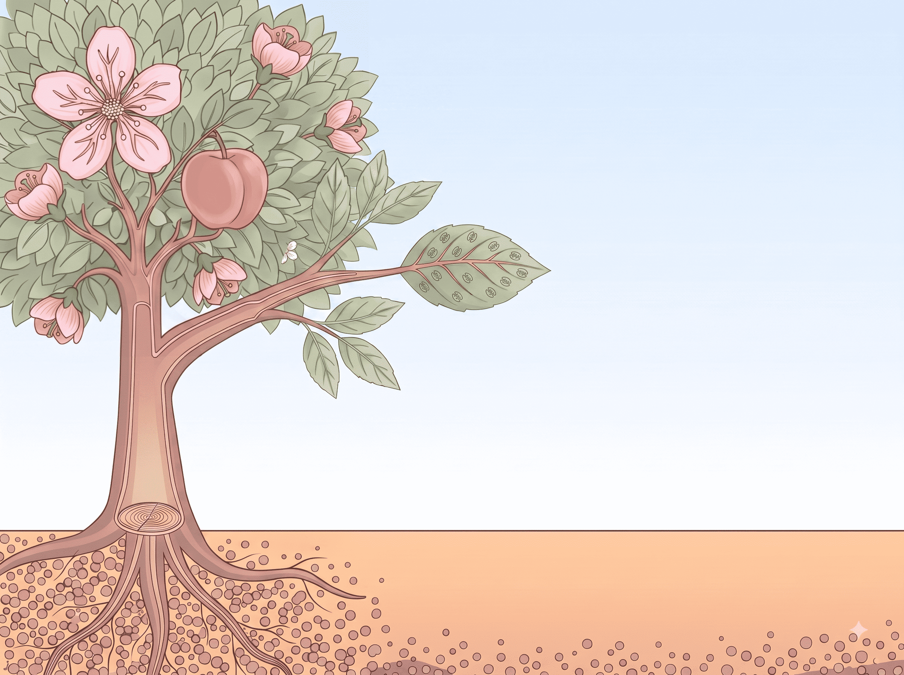
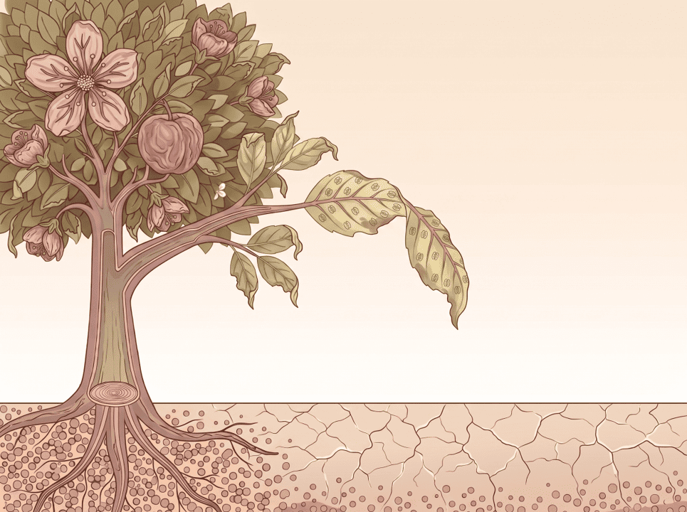

🌱
會考總複習：植物大串聯
1. 植物系統分類
2. 維管束與蒸散
3. 光合與呼吸
4. 開花與生殖
⚠️
植物快要缺水啦
準備啟動保命機制！
氣孔開啟
80%
蒸散速率
0.0
L/hr
⏸️ 觀察環境，準備開始
☀️ 光照強度
80%
💧 空氣濕度
50%
(佔全部空氣 1.56%)
🌱 土壤水量
50%
拔掉根毛
☀️ 烈日
🌧️ 陰雨
💨 強風
☀️


吸水
適中
蒸散
適中
體內水分
80%
▶ 開始蒸散
除了光，還有什麼因素也會影響氣孔開啟嗎？